통합 클라우드 사용법
프로그램을 설치하고 여는 곳입니다. 같은 아이디의 자료를 다른 컴퓨터와 똑같이 맞추고, 학원 계정도 관리합니다.
PC에 설치하기
Windows PC에서 원장·선생님 계정으로 사용합니다. 학생은 설치하지 않고 웹에서 로그인합니다.
- 설치 파일을 받습니다.
브라우저에서 mago.milky.kr을 엽니다. 로그인 화면의 Windows 프로그램 내려받기를 누릅니다. 이미 로그인했다면 앱 내려받기를 누릅니다.
- 받은 파일을 실행합니다.
브라우저의 다운로드 목록이나 컴퓨터의 다운로드 폴더에서 받은 설치 파일을 두 번 누릅니다.
‘Windows의 PC 보호’ 창이 나옵니까?위 주소에서 받은 통합 클라우드 설치 파일이라면 추가 정보 → 실행을 눌러 설치를 이어갑니다. - 화면 안내대로 설치합니다.
설치 화면에서 다음을 눌러 진행합니다. 설치가 끝나면 마고에듀 통합 클라우드를 켭니다.

PC 앱 로그인 화면
로그인하기
- 내 계정을 준비합니다.
원장은 가입 코드가 있어요로 가입합니다. 선생님은 원장에게 초대 코드 또는 아이디·임시 비밀번호를 받습니다. 원장 가입 순서
- 아이디와 비밀번호를 입력합니다.
로그인을 누릅니다. 웹에서도 mago.milky.kr에 같은 아이디로 로그인할 수 있습니다.
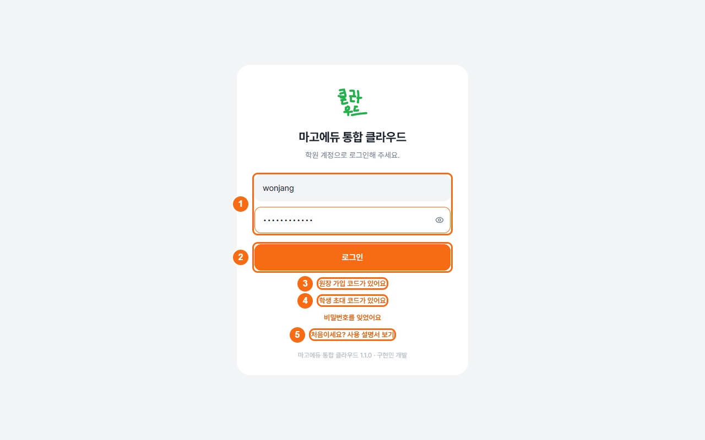
로그인·가입·설명서 - 임시 비밀번호를 받았다면 새로 정합니다.
‘새 비밀번호 설정’이 나오면 지금 비밀번호와 새 비밀번호를 입력합니다. 새 비밀번호 확인에도 같은 새 비밀번호를 넣고 바꾸기를 누릅니다.

임시 비밀번호 변경
비밀번호를 잊으면 비밀번호를 잊었어요를 눌러 안내를 확인합니다. 학생은 선생님에게, 선생님은 원장에게, 원장은 운영자에게 초기화를 요청합니다.
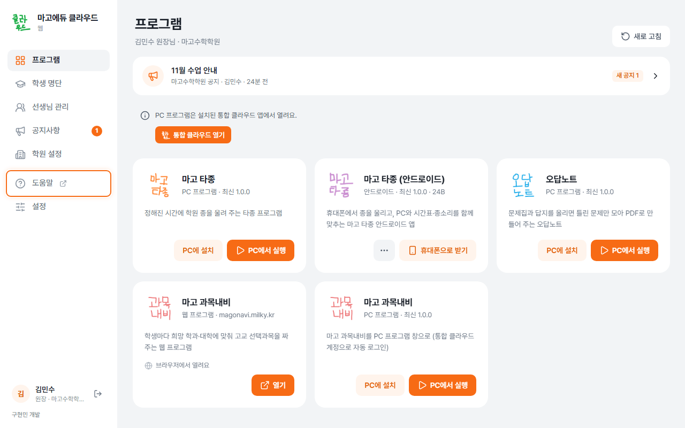
프로그램 설치·열기
- PC 앱의 프로그램 화면을 엽니다.
왼쪽 을 누릅니다. 사용할 수 있는 프로그램만 보입니다.
- 원하는 프로그램을 설치합니다.
카드의 설치를 누르고 끝날 때까지 기다립니다. 설치는 쓰려는 PC마다 한 번씩 합니다.

프로그램 목록 - 설치가 끝나면 엽니다.
열기를 누릅니다. 업데이트가 보이면 새 버전으로 바꾼 뒤 엽니다. 새 버전을 받아 둔 프로그램은 다시 켤 때 적용될 수 있습니다.
점 세 개 메뉴와 바로 가기
카드의 점 세 개(⋯)를 누르면 설치 상태에 맞는 메뉴가 나옵니다.
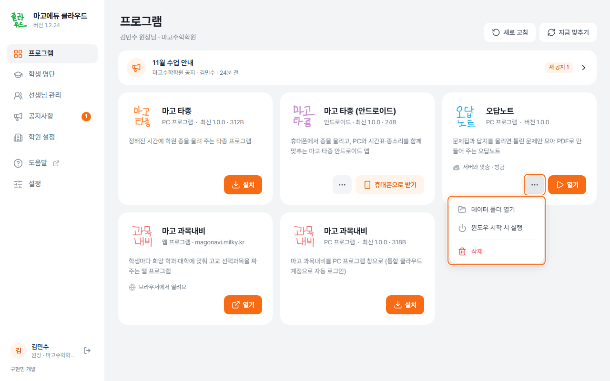
- 바탕 화면 바로 가기: 바탕 화면에 프로그램을 여는 그림을 만듭니다. 누르면 통합 클라우드가 프로그램을 켜 줍니다.
- 윈도우 시작 시 실행: 컴퓨터를 켤 때 그 프로그램도 함께 켭니다. 매일 쓰는 타종에 편합니다.
- 끄기: 실행 중인 해당 프로그램을 끕니다.
- 삭제: 해당 PC에서 프로그램을 지웁니다. 필요할 때만 사용합니다.
창 닫기와 완전히 끄기는 다릅니다
기본 설정에서는 창의 닫기 버튼을 눌러도 통합 클라우드가 계속 실행됩니다. 화면 오른쪽 아래 시계 옆의 작은 아이콘 모음이 트레이입니다. 숨겨져 있으면 위쪽 화살표를 눌러 찾습니다.
완전히 끄려면 통합 클라우드 트레이 아이콘의 메뉴에서 종료를 누릅니다. 통합 클라우드가 꺼져 있는 동안에는 자료를 다른 기기와 맞추지 못합니다. 이미 켠 프로그램은 계속 돌아갈 수 있습니다.
의 창을 닫아도 트레이에서 계속을 끈 경우에는 창을 닫을 때 통합 클라우드도 꺼집니다.
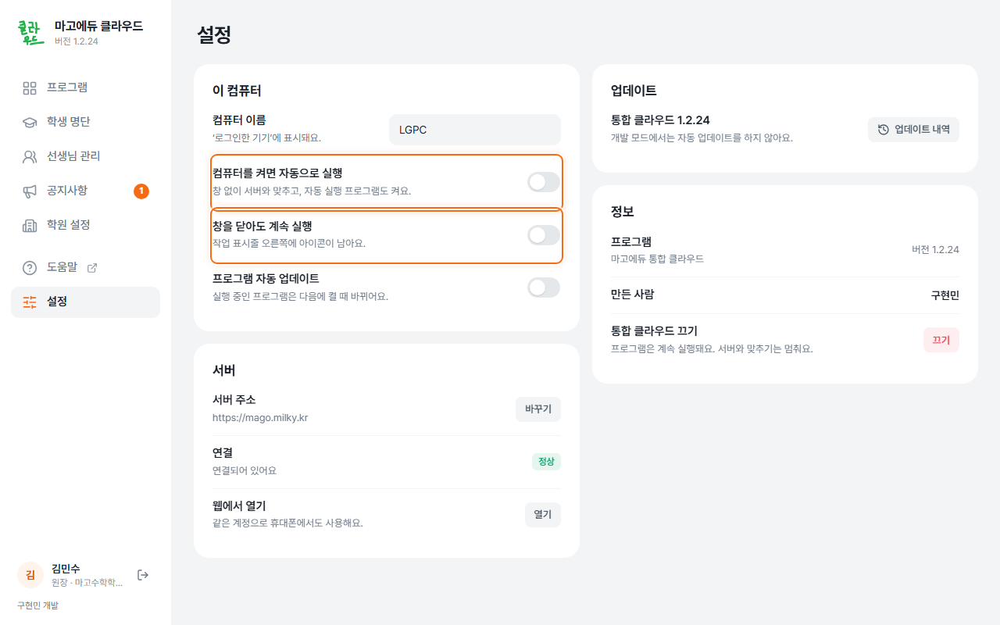
다른 컴퓨터에서 이어 쓰기
같은 아이디로 로그인하면 같은 자료를 사용합니다. 동기화는 다른 컴퓨터와 자료를 맞추는 기능입니다. 카드에서 ‘동기화됨’을 확인한 뒤 다른 컴퓨터로 옮깁니다. 필요하면 위쪽 지금 맞추기를 누릅니다.
인터넷이 끊겨도 PC에 설치하고 받아 둔 자료는 계속 쓸 수 있습니다. 연결되면 다시 동기화합니다. 첫 로그인·새 설치·아직 받지 않은 자료와 웹·정밀 인식 기능은 연결이 필요합니다.
휴대폰 앱 받기
마고 타종 안드로이드 앱은 휴대폰 브라우저에서 받습니다. 학생 계정으로 쓰는 앱은 아닙니다.
- 휴대폰에서 통합 클라우드 웹을 엽니다.
안드로이드 휴대폰 브라우저에서 mago.milky.kr에 원장이나 선생님 계정으로 로그인합니다.
- 안드로이드 카드를 찾아 받습니다.
의 ‘마고 타종 (안드로이드)’ 카드에서 내려받기를 누릅니다. PC에서 휴대폰으로 받기를 눌렀다면 안내의 주소를 휴대폰에서 엽니다.
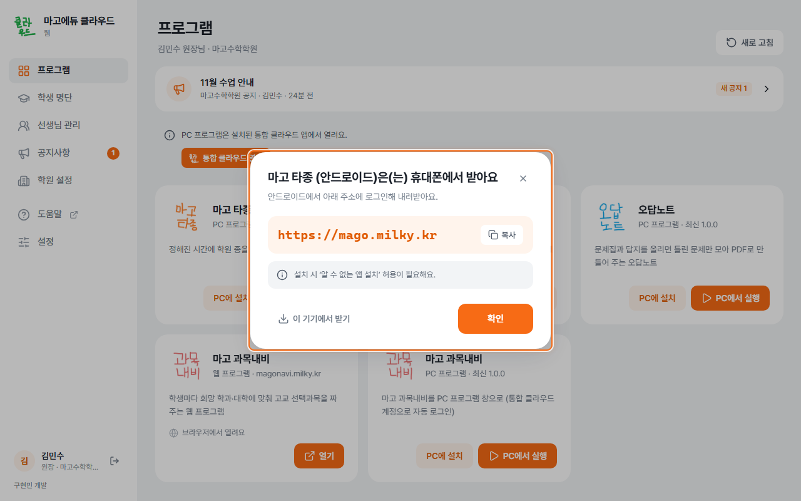
휴대폰 설치 안내 - 휴대폰에서 설치합니다.
받은 파일을 엽니다. 설치가 막히면 이 파일을 받은 브라우저에 ‘알 수 없는 앱 설치’를 허용한 뒤 설치를 이어갑니다.
- 로그인하고 알람 권한을 정합니다.
PC와 같은 아이디로 로그인합니다. 휴대폰에서 정확히 울리게 하는 설정까지 마칩니다.
공지 보기·쓰기
에서 운영자와 원장이 올린 공지를 읽습니다. 프로그램 화면 위의 새 공지를 눌러도 이동합니다.
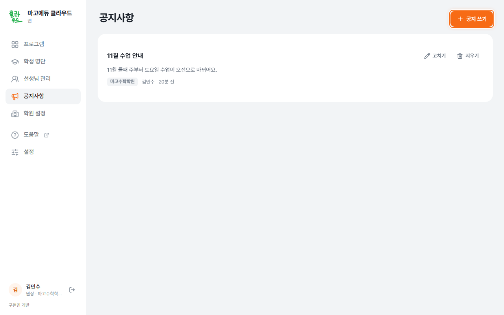
원장이 학원 공지 쓰기
- 공지 쓰기를 엽니다.
→ 공지 쓰기를 누릅니다. 원장은 자기 학원의 공지를 올립니다.
- 내용과 기간을 정합니다.
제목·내용·보여 줄 기간을 입력합니다. 꼭 먼저 보여야 하면 맨 위에 고정을 켜고 올리기를 누릅니다.
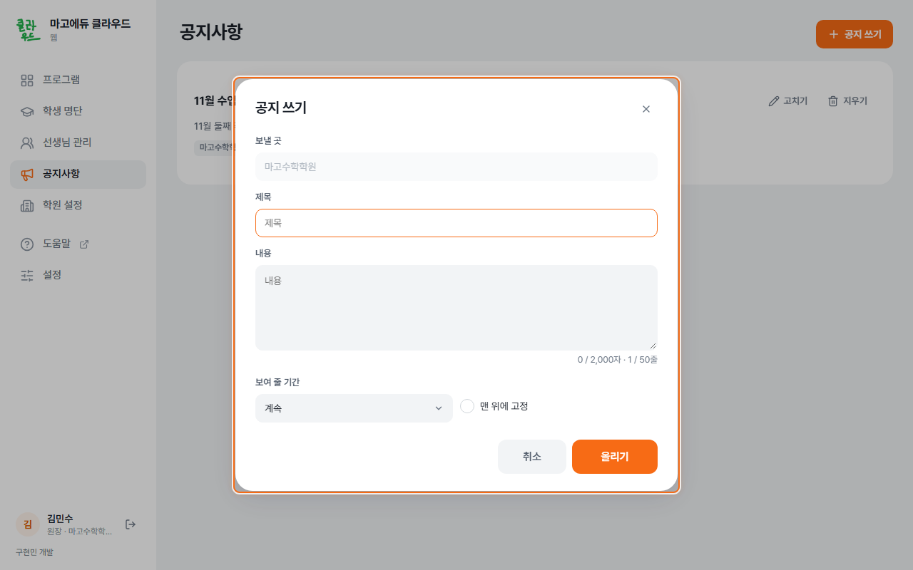
공지 작성
선생님은 공지를 읽을 수 있습니다. 학생 화면에는 공지 메뉴가 없으니 학생에게 전달할 내용은 따로 알립니다.
선생님 관리 — 원장
초대 코드를 고르면 이름과 프로그램 권한만 정합니다. 선생님은 7일 안에 가입 코드가 있어요에서 아이디·비밀번호를 직접 정합니다.
- 선생님 추가를 누릅니다.
→ 선생님 추가로 이동합니다.

선생님 목록 - 이름·사용할 프로그램을 정합니다.
아이디·임시 비밀번호를 고르면 아이디도 입력합니다. 비밀번호는 비워 두면 자동으로 만듭니다. 만들기를 누릅니다.
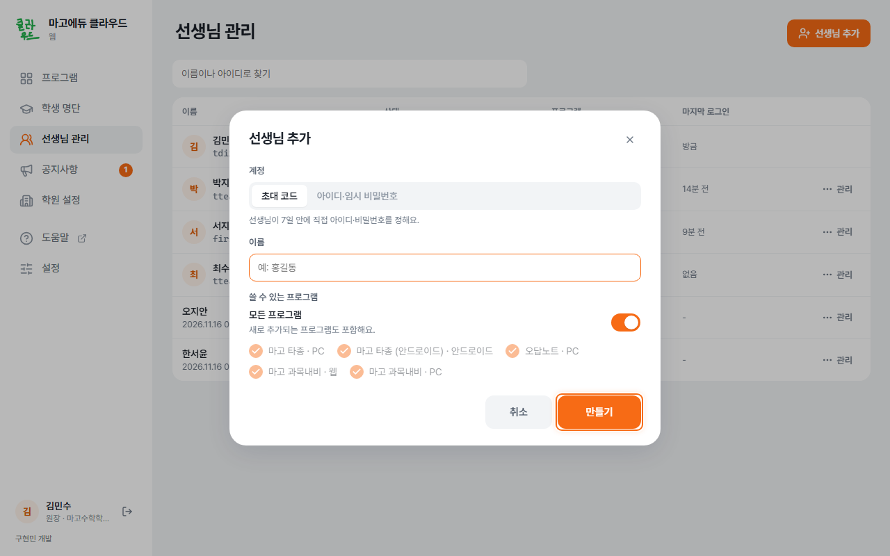
선생님 추가 - 초대 코드 또는 계정 정보를 전달합니다.
초대 코드는 코드 복사로 복사합니다. 임시 비밀번호로 만든 계정은 첫 로그인에서 새 비밀번호를 정합니다.
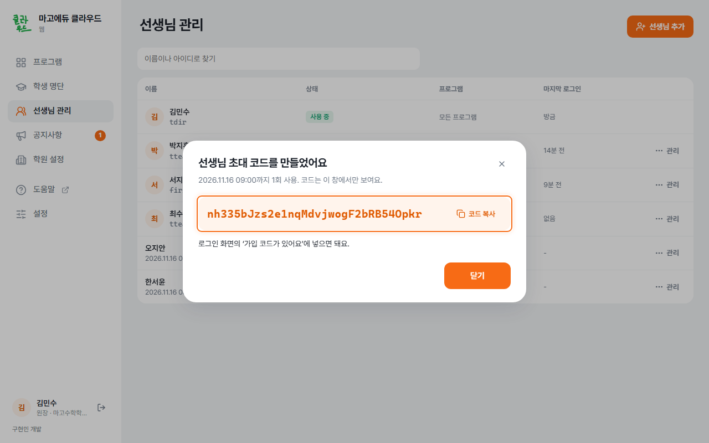
선생님 초대 코드
기존 선생님 줄의 ⋯ 관리에서 비밀번호 초기화, 정보 고치기, 사용 중지를 고릅니다. 정보 고치기에서 이름·아이디·사용할 프로그램을 바꿉니다. 초대 중인 줄의 ⋯ 관리에서는 코드 다시 만들기·초대 취소를 고릅니다. 잠깐 사용을 막으려면 계정을 지우지 말고 사용 중지를 사용합니다.

학생 명단·학생 계정
원장과 같은 학원 선생님은 학생 명단을 함께 관리합니다. 명단에 이름을 올리는 것과 학생이 로그인할 계정을 만드는 것은 다릅니다.
- 학생을 명단에 추가합니다.
→ 학생 추가를 누릅니다. 이름·학교·학년·담당 선생님을 적습니다.
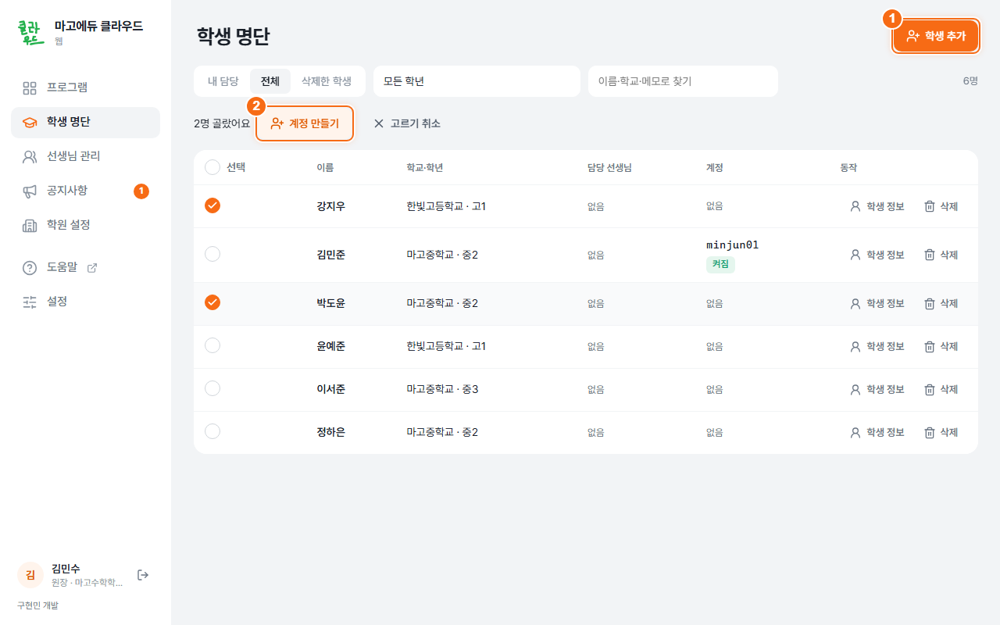
학생 명단 - 계정을 언제 만들지 고릅니다.
계정에서 나중에, 초대 코드, 아이디·임시 비밀번호 중 하나를 골라 추가합니다.

학생 계정 발급 방식
방법 1. 초대 코드 — 학생이 직접 아이디·비밀번호 정하기
- 초대 코드를 만듭니다.
학생 추가 때 초대 코드를 고르거나, 명단의 학생 정보 → 초대 코드 만들기를 누릅니다.
- 코드나 가입 주소를 학생에게 전달합니다.
가입 주소 복사로 주소를 복사할 수 있습니다. 코드는 지금 한 번만 보입니다. 7일 동안 한 번 쓸 수 있고, 새 코드를 만들면 이전 코드는 쓸 수 없습니다.
- 학생이 웹에서 가입합니다.
학생은 가입 코드가 있어요에서 자기 아이디와 비밀번호를 정합니다. 학생용 안내
방법 2. 아이디·임시 비밀번호 — 선생님이 만들어 전달하기
- 아이디와 임시 비밀번호를 만듭니다.
학생 추가 때 아이디·임시 비밀번호를 고르면 학원 코드로 아이디를 만듭니다. 명단의 학생 정보 → 아이디·임시 비밀번호로 만들기에서 아이디·비밀번호를 직접 적고 직접 만들기를 눌러도 됩니다.
- 종이로 전달합니다.
자동 발급 결과 창의 인쇄로 학생에게 줄 종이를 만듭니다. 임시 비밀번호는 다시 볼 수 없으니 창을 닫기 전에 전달할 내용을 챙깁니다.
- 발급 결과를 보관합니다.
자동 아이디는 학원 코드·연월·번호 조합입니다(예: mago2611001). 결과 창의 CSV 받기로 저장할 수 있습니다.
- 학생이 첫 로그인 때 비밀번호를 바꿉니다.
학생은 웹에서 받은 정보로 로그인합니다. 처음에는 새 비밀번호를 정해야 합니다.
여러 명의 계정을 한꺼번에 만들기
계정을 만들 학생을 체크한 뒤 선택 줄의 계정 만들기 → 일괄 생성을 누릅니다. 고른 학생 중 계정이 없는 학생만 대상입니다. 확인 창의 인원을 먼저 보고, 결과는 인쇄로 전달합니다.
정보 고치기·계정 관리·되살리기
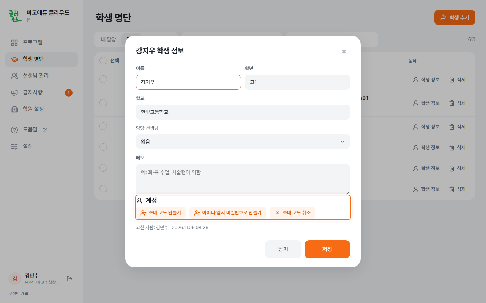
- 학생 줄의 학생 정보에서 이름·학교·학년·담당 선생님을 바꾸고 고친 사람을 확인합니다.
- 학생 정보의 계정 칸에서 초대 코드 만들기·초대 코드 취소, 계정 켜기, 비밀번호 초기화, 계정 지우기를 사용합니다. 명단의 계정 열에는 없음 또는 아이디·상태가 보입니다.
- 삭제는 학생을 명단에서 지우는 일입니다. 되돌리려면 → 되살리기를 누릅니다.
- 원장은 에서 학생을 체크하고 삭제를 누르면 보관 기간을 기다리지 않고 바로 완전히 지웁니다. 모두 삭제는 목록 전체를 지웁니다. 되돌릴 수 없습니다.
학원 설정·운영자 학원
원장은 에서 학원 정보·학원 공간·학원 AI를 확인합니다. 학원 이름은 바꾸기로 고칩니다. 계약 과목과 학원 공간도 여기에서 확인합니다.
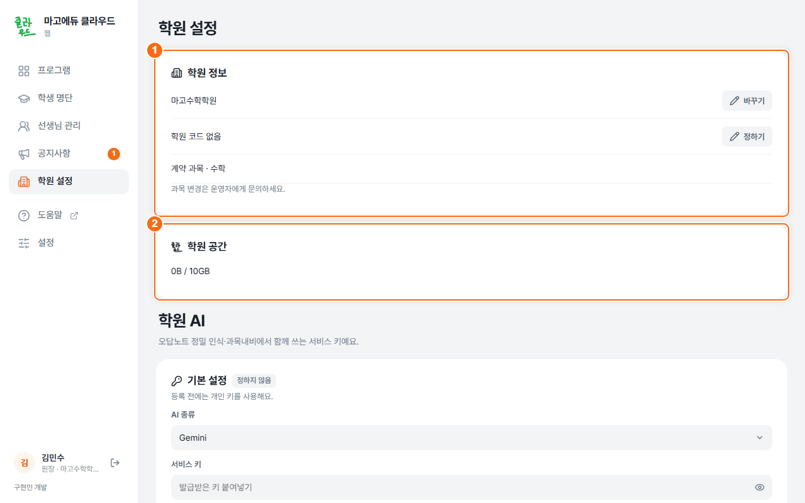
운영자는 에서 학원 줄의 학원 설정·지우기를 사용합니다. 위쪽의 가입 코드 만들기·학원 추가로 새 학원을 준비합니다. 가입 코드는 아래 가입 코드 칸에서 확인합니다. 계정은 에서 관리합니다.
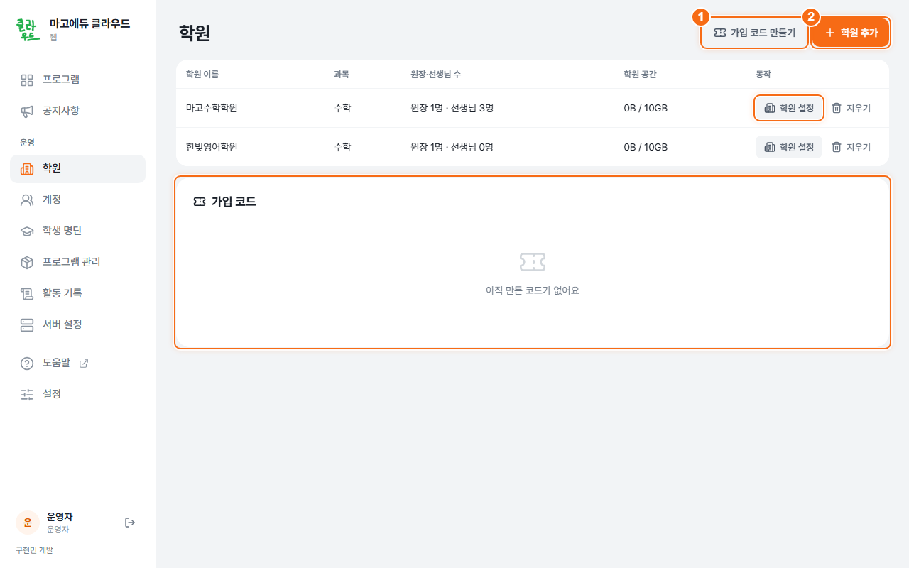
학원 AI 정하기 — 원장, 선택 기능
정밀 인식은 문제를 읽거나 학교의 과목 표를 옮기는 일을 도와줍니다. 원장이 한 번 정하면 선생님들이 함께 쓸 수 있습니다. 계정의 로그인 비밀번호와는 다릅니다.
- 학원 AI를 엽니다.
왼쪽 → 학원 AI의 ‘기본 설정’을 확인합니다.
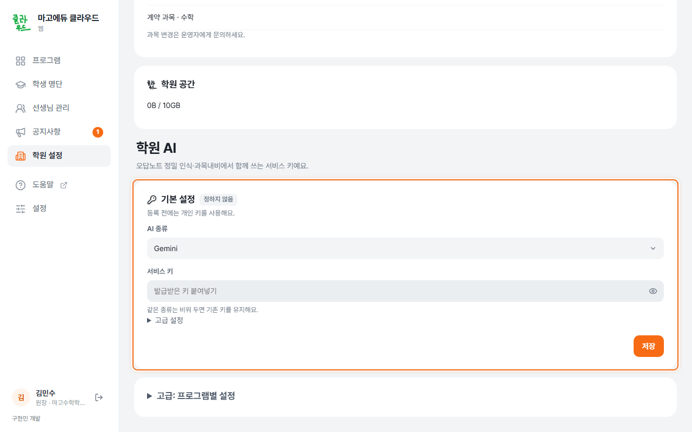
학원 AI 설정 - 학원에서 쓸 연결 정보를 입력합니다.
서비스 종류와 API 키(그 서비스를 이용하는 연결용 비밀키)를 넣고 저장합니다. 서비스에 따라 모델 이름이나 주소도 필요합니다. 어렵다면 운영자에게 설정 도움을 요청합니다.
- 각 프로그램에서 학원 AI를 쓰게 합니다.
오답노트는 학원 AI 쓰기, 과목내비는 학원 AI를 고릅니다. 프로그램마다 다르게 정하려면 ‘고급: 프로그램별 설정’에서 따로 정하기를 사용합니다.
고급 설정의 분당 요청 수·모델을 비워 두면 프로그램 기본값을 사용합니다. 보조 모델은 기본 모델 실패 때 사용합니다. 호환 서비스는 주소를 바꿀 수 있으며, 키 없는 서버는 키를 비워 둡니다.
처음에는 학원 AI 사용을 권합니다. 내 키 쓰기 같은 개인 설정은 원장과 상의한 뒤 합니다. 학원 AI가 없어도 오답노트의 기본 분석과 과목내비의 직접 선택·입력은 할 수 있습니다.
내 계정·로그인한 기기
- 내 계정을 엽니다.
맨 위의 내 계정 칸을 엽니다. 왼쪽 아래 내 이름을 눌러도 열립니다. 아이디 바꾸기·비밀번호 바꾸기를 누르면 창이 나옵니다. 학생 웹은 왼쪽 을 사용합니다.
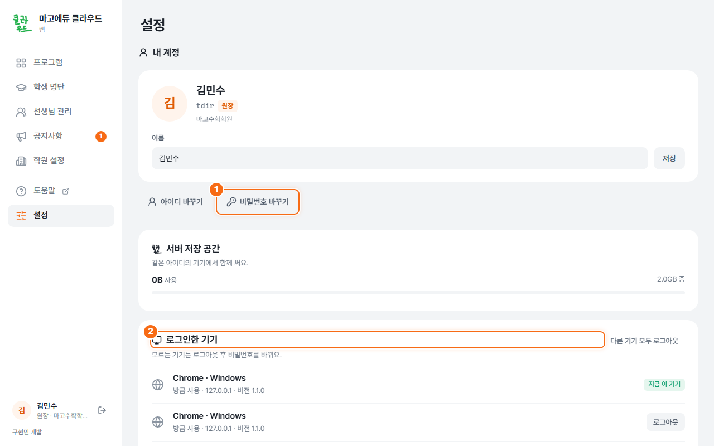
설정 → 내 계정 - 비밀번호를 바꿉니다.
비밀번호 바꾸기로 창을 열고 지금 비밀번호, 새 비밀번호, 새 비밀번호 확인을 넣고 비밀번호 바꾸기를 누릅니다. 다른 기기에서는 로그아웃을 켜면 다른 기기에서는 새로 로그인해야 합니다.
- 로그인한 기기를 확인합니다.
모르는 기기 옆의 로그아웃을 누릅니다. 필요하면 다른 기기 모두 로그아웃을 누릅니다.
오래 쓰지 않은 자료는 서버에서만 정리됩니다. 원래 PC에서 다시 열면 서버에 올라옵니다. 학원 공용 용량은 개인 용량과 따로 계산합니다.
예전 데이터 가져오기
예전에 오답노트나 타종을 따로 설치해 썼다면 그 PC에서 진행합니다. 처음 열 때 ‘예전 데이터를 가져올까요?’가 나오면 가져올 자료를 고르고 가져오기를 누릅니다.
가져온 자료는 지금 로그인한 계정으로 옮겨지고, 예전 자료는 원래 자리에 남습니다. 나중에 할 때는 이번엔 건너뛰기를 누릅니다. PC에 예전 오답노트·타종 자료가 있을 때만 카드 더 보기에 예전 데이터 가져오기가 나옵니다.
웹과 PC 앱의 차이
웹은 브라우저에서 mago.milky.kr을 여는 것입니다. PC 앱은 Windows에 설치한 마고에듀 통합 클라우드입니다.
| 할 일 | 웹 | PC 앱 |
|---|---|---|
| 원장·선생님 계정·공지·명단 관리 | 가능합니다. | 가능합니다. |
| PC 프로그램 설치·실행 | 이 PC의 앱을 열어 부탁합니다. | 직접 설치하고 엽니다. |
| PC 자료 동기화·예전 자료 가져오기 | PC 앱에서 합니다. | 가능합니다. |
| 안드로이드 앱 받기 | 휴대폰 브라우저에서 받습니다. | 휴대폰으로 받는 안내를 봅니다. |
| 학생 계정 사용 | 내 오답노트·마고 과목내비·내 계정 | 로그인할 수 없습니다. |
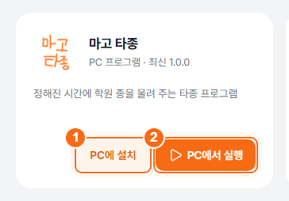
PC에 설치 또는 PC에서 실행을 누른 뒤 브라우저가 앱을 열지 물으면 열기를 허용합니다. 앱이 열리지 않으면 통합 클라우드 설치부터 진행합니다.